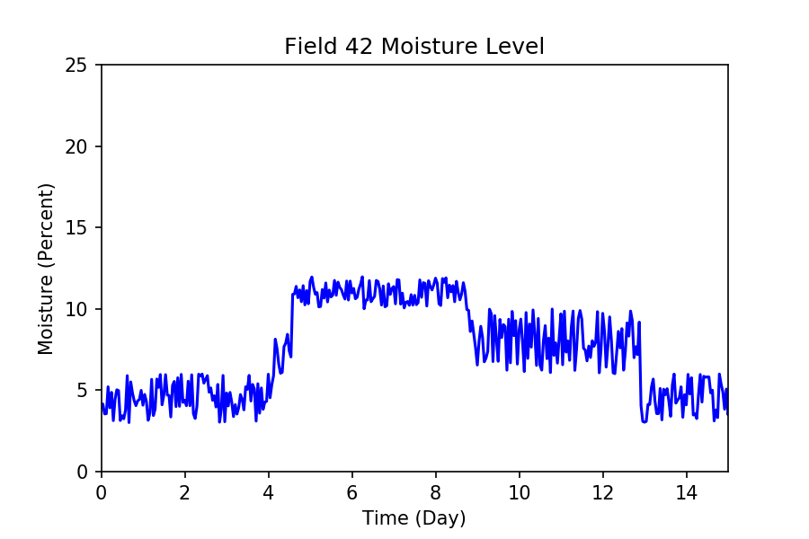

Simulation
We used Geant 4 , a gold standard toolkit in
simulating paticle trals
Sample geometry similar to soil conditions
was tested for a variety depths
and soil characteristics
Water Content
Real Time Soil Water Content
See graph.
Solar Activity
Detail
Solar activity mapped to solar panel usage. Correlated to effects on background neutron population.